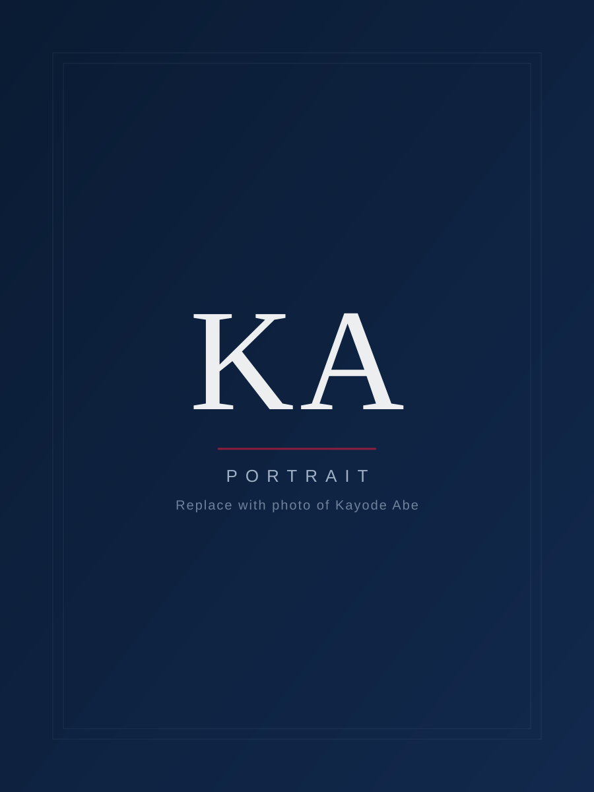

Corporate Strategy & Organizational Design
We support boards and executive teams to clarify strategic direction, review operating models and align structure, roles and decision-making with long-term goals.
A senior-led management consulting and organization development practice helping boards, executives and institutions align strategy, structure and leadership for sustained performance.
Trusted across leading institutions
KingsPride Consult Limited is a Lagos-based management consulting and organization development firm focused on helping organizations navigate growth, transformation and leadership challenges with clarity and confidence.
We work with boards, CEOs, executive teams and senior leaders to:
Our work is grounded in rigorous thinking, practical experience and a deep understanding of how institutions function in the Nigerian and broader African context.

Kayode Abe is a seasoned corporate strategy, human capital and organization development consultant with more than 34 years of experience spanning global consulting firms, multinationals, financial institutions and professional bodies.
An alumnus of Obafemi Awolowo University (formerly University of Ife), Kayode graduated top of his class with a First Class Honours degree in Sociology and Anthropology and later earned an MBA. He began his career as a Graduate Teaching Assistant and University Scholar in the Department of Management and Accounting.
He has held senior and executive roles at Coopers & Lybrand (now part of PwC), Michelin Group in Nigeria and France, New National Bank of Nigeria, UBA Group and Ecobank Group, where he served as Deputy General Manager and Country Head of Human Resources and later Group Head of Cross-Border Business.
From 2010 to 2019, Kayode served as Director of Human Resources and Administration at the Institute of Chartered Accountants of Nigeria (ICAN), where he led the end-to-end modernization and automation of the institution's HR and administration systems and played a key role in its seven-year strategic plan.
He serves on the Advisory Board of Rome Business School Nigeria and is a faculty member of its International Human Resource Management programme, where he was named Best Faculty of the Year in both the 2021/2022 and 2023/2024 academic sessions. He also features on the faculty of FITC Nigeria, Institute of Directors Nigeria, CIBN, ICAN, CBN Training School and NDIC Training Academy.
Kayode is a member of the Chartered Institute of Bankers of Nigeria (CIBN) and the Chartered Institute of Personnel Management of Nigeria (CIPMN), where he chaired the Research and Publications Committee from 2016 to 2018. He is co-author of "Understanding Management Principles" in Essentials of Banking, published by FITC in 2013 and republished in 2022.
Through KingsPride, Kayode brings this breadth of executive and advisory experience to institutions seeking thoughtful, discreet and high-impact counsel.
We help institutions solve complex, people-and-strategy challenges through five interconnected practice areas.
We support boards and executive teams to clarify strategic direction, review operating models and align structure, roles and decision-making with long-term goals.
We design and refine people strategies, HR frameworks and policies that enable performance, accountability and engagement, linking human capital clearly to business strategy.
We develop leaders and high-potential talent through bespoke leadership programmes, experiential learning and focused coaching that strengthen judgement, presence and execution capability.
We provide confidential advisory support to boards, CEOs and senior executives on governance, succession, restructuring and organizational effectiveness.
We design and deliver high-impact training programmes, workshops and seminars for institutions, professional bodies and corporate academies, drawing on decades of faculty and facilitation experience.
Tell us about your organization and the challenge you are facing. We will help you frame the right engagement.
Talk to UsOur work is guided by a simple philosophy: listen deeply, diagnose rigorously, design thoughtfully and support execution.
We invest time with your leaders to understand context, history, culture and current realities before proposing solutions.
We combine data, stakeholder perspectives and decades of executive experience to identify the real issues, not just the visible symptoms.
We co-create pragmatic, fit-for-purpose interventions with your team, aligned to your strategic and organizational realities.
We support implementation through facilitation, capability building, coaching and ongoing advisory, ensuring recommendations translate into lasting change.
KingsPride's work extends beyond consulting engagements into executive education, faculty roles and contributions to professional practice.
Through his roles with Rome Business School Nigeria, FITC Nigeria, Institute of Directors Nigeria, ICAN, CIBN and other institutions, Kayode has designed and delivered programmes on management, leadership, human capital and organizational development to thousands of professionals.
This ongoing engagement with professional bodies keeps our perspectives current, practical and closely connected to the realities of leaders and institutions.
We typically partner with:
Our engagements are particularly suited to organizations facing moments of change: growth, restructuring, succession, cultural shifts or strategic reorientation, where experienced, senior-level counsel can make a meaningful difference.
If your organization is navigating change, growth or leadership challenges and you value thoughtful, experience-led support, KingsPride would be pleased to explore how we can work together.
Share a brief overview of your organization and the challenge or opportunity you are considering. We will respond to schedule a confidential conversation.